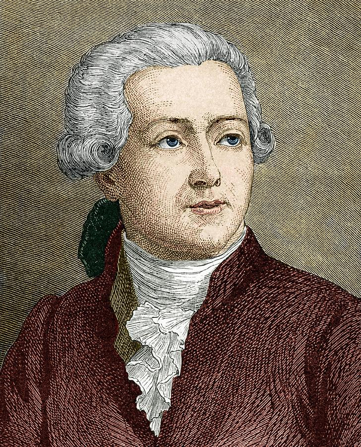

Antoine Lavoisier · 1789
Definisi Utama
Hukum Kekekalan Massa menyatakan bahwa massa total zat-zat sebelum reaksi kimia sama dengan massa total zat-zat setelah reaksi kimia berlangsung, dalam sistem tertutup. Massa tidak dapat diciptakan maupun dimusnahkan — hanya berubah bentuk.
massa total reaktan = massa total produk"In nature nothing is created, nothing is lost, everything changes." — Lavoisier
Sang Penemu

Antoine-Laurent de Lavoisier
26 Agustus 1743 — 8 Mei 1794
Paris, Prancis
Antoine-Laurent de Lavoisier adalah seorang ilmuwan Prancis yang dikenal sebagai "Bapak Kimia Modern". Ia lahir di Paris pada tahun 1743 dari keluarga bangsawan dan menerima pendidikan hukum sebelum beralih sepenuhnya ke ilmu pengetahuan alam.
Melalui serangkaian percobaan terkenal dengan pembakaran dan respirasi, ia membuktikan bahwa oksigen berperan penting dalam proses pembakaran — menumbangkan teori flogiston yang telah dipercaya selama berabad-abad.
Pada tahun 1789, Lavoisier mempublikasikan karyanya Traité Élémentaire de Chimie (Risalah Dasar Kimia), yang secara sistematis merumuskan Hukum Kekekalan Massa dan meletakkan dasar tata nama kimia modern.
Tragisnya, ia dieksekusi pada usia 50 tahun di masa Revolusi Prancis. Matematikawan Joseph-Louis Lagrange berkomentar, "Butuh waktu sedetik untuk memenggal kepalanya, namun seratus tahun tidak cukup untuk menghasilkan kepala seperti itu."
Ilustrasi Reaksi
Salah satu percobaan khas yang digunakan Lavoisier untuk membuktikan hukumnya:
4 g + 32 g = 36 g · Massa total reaktan = Massa total produk ✓
Linimasa
Penerapan
Menghitung jumlah bahan bakar dan oksigen yang dibutuhkan, serta produk gas yang dihasilkan dalam pembakaran mesin.
Dasar perhitungan kuantitatif dalam kimia: menentukan massa reaktan dan produk dalam persamaan reaksi.
Merancang reaktor kimia agar tidak ada massa yang terbuang, mengoptimalkan efisiensi produksi di pabrik.
Melacak aliran massa polutan di ekosistem, seperti siklus karbon dan nitrogen di alam.
Memastikan formulasi obat menghasilkan produk dengan massa yang tepat dan tidak ada zat aktif yang hilang.
Menghitung yield (hasil) produksi makanan: berapa gram roti yang dihasilkan dari sekian gram terigu, air, dan ragi.
Rangkuman
Berikut adalah hal-hal terpenting yang perlu diingat tentang Hukum Kekekalan Massa: